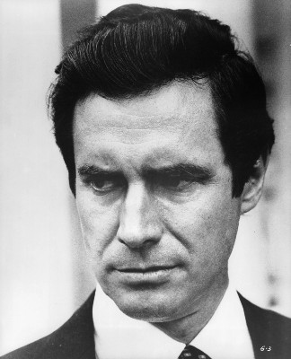
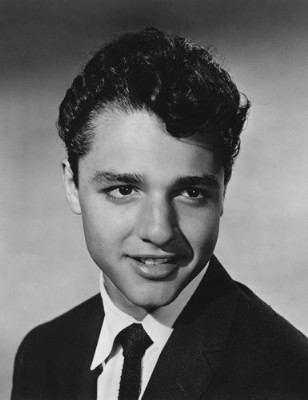
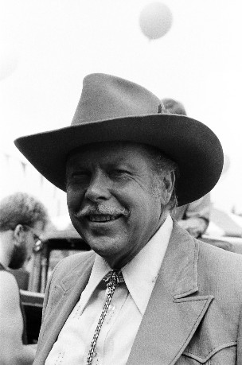
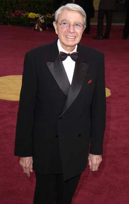
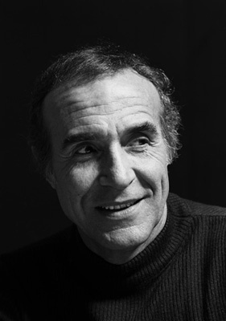
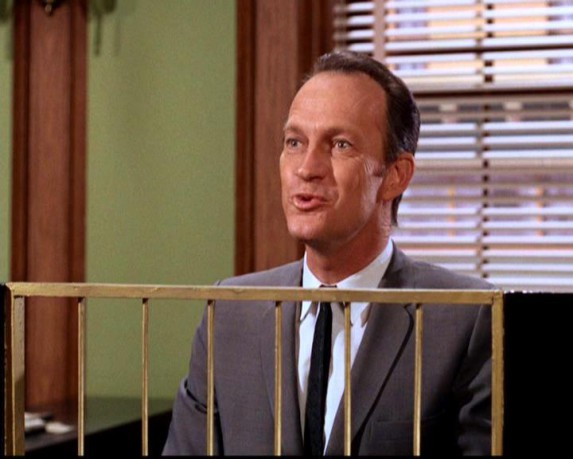

#4928 Flucht vom Planet der Affen
Alternativ: Escape from the Planet of the Apes

 IMDB-Wertung: 6.3 / 10
IMDB-Wertung: 6.3 / 10  Metascore: 0
Metascore: 0 
Als das Raumschiff des verschollenen Astronauten Taylor nach zwei Jahren wieder auf der Erde landet, ist die Freude zunächst groß. Noch größer ist aber das Erstaunen, als die Menschen feststellen, daß sich Affen in den Helmen und Anzügen befinden. Der beste Platz für Cornelius, Dr. Zira und Dr. Milo ist scheinbar der Zoo, wo sie sich auch freiwillig hintransportieren lassen. Doch für die intelligenten Affen vom anderen Stern ist es eine Gefahr, zusammen mit wilden Affen von der Erde in einem Käfig eingesperrt zu werden.
Jahr: 1971
Dauer: 97 Minuten
FSK: 12
Land: USA Studio: Twentieth Century-Fox Film Corp.Tonspuren: DTS - ,
Untertitel: Deutsch,
Auflösung: 1080p (1920x816) Größe: 8704 MB
Genre: Action, Sci-Fi
Regisseur: Don Taylor
Drehbuch: Ayad Akhtar
Soundtrack:
Darsteller:
 Roddy McDowall als Cornelius
Roddy McDowall als Cornelius- Kim Hunter als Zira
-  Bradford Dillman als Dr. Lewis Dixon
- Natalie Trundy als Dr. Stephanie Branton
 Eric Braeden als Dr. Otto Hasslein
Eric Braeden als Dr. Otto Hasslein William Windom als The President
William Windom als The President-  Sal Mineo als Milo
-  Albert Salmi als E-1
 John Randolph als Chairman
John Randolph als Chairman Harry Lauter als General Winthrop
Harry Lauter als General Winthrop M. Emmet Walsh als Aide
M. Emmet Walsh als Aide Norman Burton als Army Officer
Norman Burton als Army Officer Donald Elson als Curator
Donald Elson als Curator-  Army Archerd als Referee
-  Ricardo Montalban als Armando
- John Alderman als Marine Corporal , uncredited
 James Gonzalez als Official at Briefing , uncredited
James Gonzalez als Official at Briefing , uncredited Joe Gray als Bodyguard , uncredited
Joe Gray als Bodyguard , uncredited- Janos Prohaska als Heloise , uncredited
 Hank Robinson als Reporter , uncredited
Hank Robinson als Reporter , uncredited James Sikking als Control Room Officer , uncredited
James Sikking als Control Room Officer , uncredited- Jason Evers als E-2
 Roy Glenn als Lawyer
Roy Glenn als Lawyer- Peter Forster als Cardinal
- William Woodson als Naval Officer
- Tom Lowell als Orderly
- Gene Whittington als Marine Captain
- Bill Bonds als TV Newscaster
- James Bacon als General Faulkner
- Jack Berle als Secretary of State , uncredited
- Paul Bradley als Official at Briefing , uncredited
- Karl Bruck als German Newscaster , uncredited
- Sam Chew Jr. als Undetermined , uncredited
-  Walker Edmiston als Talking Baby Chimp , uncredited
- James W. Gavin als Helicopter Pilot , uncredited
- George Golden als Official at Briefing , uncredited
- Robert Gunner als Landon , archive footage, uncredited
- Elizabeth Harrower als Reporter at Hotel , uncredited
- Robert Hitchcock als Reporter , uncredited
- Shep Houghton als Bystander , uncredited
- Joseph La Cava als Waiter , uncredited
- Robert Nichols als Reporter , uncredited
- Ron Pinkard als Undetermined , uncredited
- Tony Regan als Reporter at Hotel , uncredited
- Stephen Roberts als Gen. Brody , uncredited
Datei: X:\7+mehr(A-Z)\Planet der Affen\3 Flucht vom Planet der Affen (1971, FSK12, 1920x816).mkv seit 02.12.2016
Festplatte: HD Collection-7+mehr(A-Z)+Person
 Es gibt insgesamt 14 Filme in der Gruppe '7+mehr(A-Z)\Planet der Affen'
Es gibt insgesamt 14 Filme in der Gruppe '7+mehr(A-Z)\Planet der Affen'